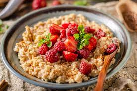

Porridge aux flocons d'avoine

Description
Du Porridge aux flocons d'avoines pour bien commencer la journée
Ingredients
- Flocons d'avoine
- Lait écrémé
- Sucre de coco
- Canelle
- Sel
Etape
- Dans une casserole mettre à chauffer les flocons d'avoine et le lait
- Mélanger régulièrement avec une cuillère en bois pour que la préparation ne colle pas au fond de la casserole
- Le mélange va épaissir.Ajouter le sucre, la cannelle et la pincée de sell
- Ajouter du lait en fonction de la consistance souhaitée
- A déguster sans attendre